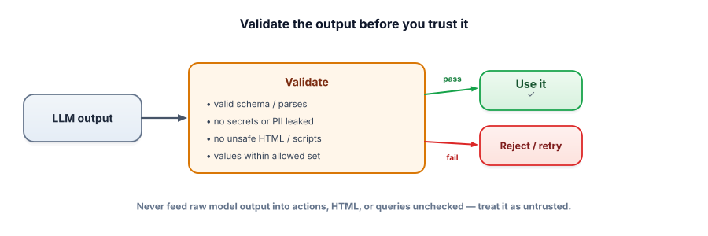

Output validation
The model’s output is not trusted code — it’s text generated from (possibly poisoned) inputs. The moment you feed it into HTML, a database query, a shell, or an action, it becomes an attack vector. Validating output before use closes the loop on LLM security.
Why output is an attack surface
We treat input as untrusted (Lesson 7.1). The subtle danger is that output is untrusted too: it’s shaped by inputs an attacker may control (via injection), and the model can produce malformed, malicious, or sensitive content. If you render its output as HTML, you risk XSS; if you run its output as a SQL query, you risk SQL injection; if you let it trigger a tool, you risk an unintended action; if you pass it on verbatim, you might leak a secret it included. The fix is the same as for any untrusted data: validate and sanitize before use.

Output validation is checking and sanitizing the model’s output before your system acts on it. It includes schema validation (does it parse into the expected shape? — Track 2.4), sanitization (escape or strip unsafe HTML/markup so it can’t execute), allowlisting (only permit known-good values/actions), and leak checks (no secrets or PII in what you return). The principle: insecure output handling — trusting model output downstream — is a top LLM vulnerability.
The pattern: parse, check, allowlist, sanitize — then and only then use it.
import json, html
def safe_use(model_output):
# 1) structure: must be valid JSON in the expected shape (Track 2.4)
try:
data = json.loads(model_output)
except json.JSONDecodeError:
return reject("not valid JSON")
# 2) allowlist: action must be one we permit (never run arbitrary actions)
if data.get("action") not in {"refund", "reply", "escalate"}:
return reject("unknown action")
# 3) bounds: enforce hard limits in CODE, not the prompt (Track 4.8)
if data["action"] == "refund" and data["amount"] > 100:
return needs_human_approval(data)
# 4) sanitize anything rendered to a user (prevent XSS)
safe_text = html.escape(data["message"])
return safe_textNotice every dangerous path is gated by your code, not the model’s good intentions: unknown actions are rejected, big refunds need a human, and user-facing text is HTML-escaped so an injected <script> can’t run. The model proposes; your validation disposes.
- Model output is untrusted — it’s shaped by attacker-influenceable inputs and can be malformed or malicious.
- Validate before use: parse the schema, allowlist values/actions, enforce bounds in code, sanitize markup, scan for leaks.
- Insecure output handling (XSS, SQL injection, unsafe actions) is a top LLM vulnerability.
- Enforce hard limits and allowed actions in code, never via the prompt alone.
- This closes the loop: untrusted in and untrusted out.
Your app shows the model’s answer directly in a web page via innerHTML. An attacker, through prompt injection, gets the model to output <script>steal()</script>. What protects you?
Why validate the model's output against a schema before acting on it?
1. Give three distinct downstream sinks where unvalidated model output is dangerous, and the matching validation.
2. Why enforce a refund limit in code rather than instructing the model “never refund over $100”?
3. Your agent asks the model which tool to call. Why allowlist the action instead of executing whatever it names?
▸ Show solutions & reasoning
1. (a) HTML/DOM → escape/sanitize to prevent XSS. (b) SQL/database → never build queries from raw output; use parameterized queries and validate values to prevent SQL injection. (c) Actions/tools → allowlist permitted actions and validate arguments to prevent unintended operations. (Also: returning text to a user → scan for secrets/PII.) Each sink has a matching, well-known sanitization.
2. Because the prompt is influenceable (injection) and probabilistic — “never over $100” can be overridden or ignored, and you’d only find out when money moved. A hard check in code runs outside the model’s influence and cannot be talked around: even if the model outputs amount: 10000, your validator rejects or escalates it. Security limits belong in the trusted layer.
3. Because the model could be hijacked (injection) or simply hallucinate a tool name, and executing an arbitrary named action is “excessive agency” — a top LLM risk. An allowlist means only the specific, vetted actions can run, so the worst a manipulated model can do is request something that gets rejected. You constrain the set of possible actions in code, not trust the model to choose safely.
Output validation is where LLM security rejoins ordinary, battle-tested application security. The lesson the web learned decades ago — “never trust input; sanitize before it crosses into a dangerous context” — applies twice for LLM apps: untrusted input flows into the model, and the model’s (input-influenced) output flows into your sinks. So you sanitize at both boundaries with the same rigor: parameterized queries for databases, escaping/CSP for HTML, allowlists for actions, schema validation for structure, and secret/PII scanning for anything returned. The LLM is just a powerful, manipulable component in the middle; the deterministic code around it is what enforces safety.
This reframes the whole track’s philosophy. You don’t make the model trustworthy — you build a system where the model’s behavior, however manipulated, can only flow through validated, least-privilege channels. Insecure output handling shows up explicitly in the OWASP LLM Top 10 because it’s so commonly skipped: teams validate inputs, then pipe the model’s output straight into eval, innerHTML, or a database. Don’t. Treat output as untrusted data, run it through the gauntlet of structure-check → allowlist → bounds-in-code → sanitize → leak-scan, and only then let it act. Combined with input moderation, prompt hardening, and least privilege, this is what turns “the model said so” into a system you can actually defend.
You’ve now seen each guard individually. The art is combining them so no single failure becomes a breach. Next: defense in depth.